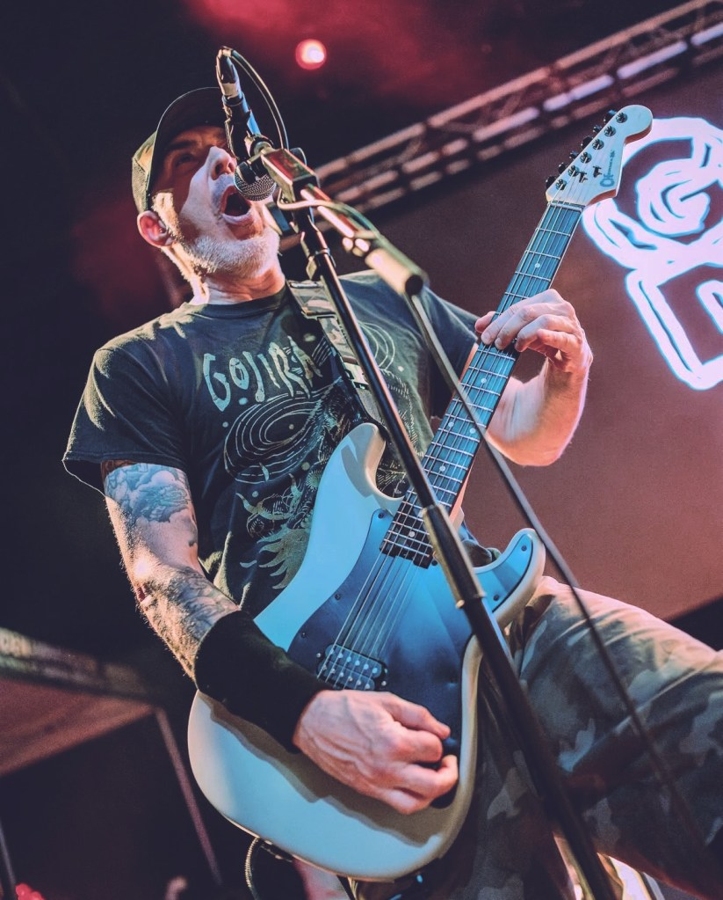

When did you start playing guitar and what guitar and equipment did you start on?
I got my first guitar when I was 8, for Christmas, and started taking lessons shortly after. It was a Les Paul knockoff—I forget which brand now, but I want to say Hondo maybe.
Which bands inspired you to start playing guitar and are there certain riffs or songs that specifically motivated you to start playing?
At that age it was 100% Van Halen. My mom was young and listened to a lot of rock, so Styx, Foreigner, and Led Zeppelin all inspired me at the time as well.
When did you really feel your guitar playing and equipment got more professional and you thought: “Yes, this is the sound I really like!”?
Hahaha—I’ll let you know when that happens! But I’d say around 1993. Our friend Jim Winters from Conviction was a huge inspiration. He had pedals to shape his tone, which I hadn’t considered. I started following his lead and basically have never stopped trying to improve my tone. These days it’s also about combining the best tone possible with convenience.
Do these two go hand in hand, or did it evolve differently for your playing and your equipment?
They absolutely go hand in hand. If you have a tone that inspires you, you’ll play more and improve. A tone can inspire a certain type of riff or even take the band in a whole new direction.
Do you recall what kind of amps, guitars, pedals, and pickups you used on the albums? If so, would you mind sharing them?
Firestorm was a Crate head through a Marshall cab of some type.
Destroy the Machines was the same Crate head but with a Digitech RP-1 processor, using some EQ and compression. I think we may have used my Crate cabinet with Celestions on that one.
Gomorrah’s was a whole bunch of stuff, but predominantly a Dual Rectifier into the Mesa Rectifier cabs I had at the time.
The Oath that keeps me free (live album) was a Gibson SG with EMG 81’s.
Breed the Killers was a 5150 with a TS-9 into a Marshall cabinet.
Slither was a 5150 mainly, but we also used my Mesa Boogie TriAxis into a Marshall cab. We did a strange thing where we ran the 5150 preamp into my Mesa 2:90 power amp, and the TriAxis into the 5150 power amp. I have no idea why, but also—why not?
To The Death was an FJA-modded 5150 and a modded Marshall JCM 900 at the same time. That Marshall sounded amazing.
Neutralize and Salvation were both EVH 5150s—not sure what cabinet, as Zeuss re-amped from DIs and I wasn’t there.
The VFTA EP was an ENGL Powerball through a Hiwatt cab.
The Integrity split was a Diezel through a Hiwatt cab, with a little HM-2 added for character.
I have noticed the difference in sounds over the years; did you switch amps because they were a better fit for your playing and the music?
My main rig for the vast majority of Earth Crisis was a giant rack we called “The Death Star.” It was a Mesa Boogie TriAxis, Mesa Boogie 2:90, a Rocktron effects processor, and a BBE Sonic Maximizer.
I see you used a Mesa 2:90 and TriAxis during the Gomorrah Season Ends period. Looking back at that ‘90s gear and sound, do you miss the huge power amps or are you happy with current modelers or simpler high-gain heads?
I had that setup from about 1995–2000. I kept adding pieces to shape the tone because I initially didn’t love the TriAxis. I eventually had a pretty killer sound, but it was an unbelievable hassle—expensive to maintain and extremely heavy. I do wish I still had it just to see if I’d still like the sound today.
I always thought you had one of the most fierce and heavy guitar sounds starting with Destroy the Machines. Is that something you have in mind when recording or playing live?
Thanks! I spend a lot of time tweaking tones, so I really appreciate that. Yes—my goal is for people to go, “Fuuuuuuuck” when I start playing. I’m proud to say I’ve accomplished that a few times. Hahaha.
Do you pay attention to the guitar sound to make it aggressive, and do you listen to other bands with massive tones (for example Robb Flynn on Breed the Killers)?
Yes to both. I try to A/B my sound against albums I like or players I respect. I read tips and tricks from players I admire and take mental notes constantly.
You’ve had a great collection of premium guitars over the years. How do the Gibsons, ESP Vipers, Ibanez, and now Balaguer guitars compare? Do you miss the old ones?
I’m not wealthy, so when I want a new guitar something usually has to go. The ones I miss most are my Gibson Les Paul Custom Silverburst, my Carvin/Kiesel DC, and my Japanese Orville Les Paul Custom. The Vipers were great, but I don’t miss them too much. In general I don’t miss old gear as much as I wonder what I’d think of it now. I love my Balaguers and the Charvels I’ve been playing lately.
Do you set up your guitars yourself, or do you use a tech?
Occasionally I’ll have a tech do work, but I try to do as much myself as possible. I recently began cutting nut slots to accommodate the thicker strings I use. The only thing I’d still need a tech for is fret work.
Have you modded your guitars or gear, or do you use everything stock?
I’ve never modded amps or pedals, but I almost always mod guitars. Pickups almost always get swapped. These days I use a DiMarzio Tone Zone in most guitars. I also try to eliminate the neck pickup when possible and use only one volume knob placed out of the way.
Can you tell me more about tuning and strings? How do they impact your tone and playing?
For Earth Crisis we are currently in Drop C, using a custom Stringjoy set: 11–58 with a wound 3rd. That came from years of trial and error—stability and tone were the priority. I want to be able to hit strings hard and have them stay solid. Thicker gauges don’t feel spongy and have a more authoritative tone. For SECT and Tooth & Claw we’re in C Standard with 12–58 wound 3rd, also Stringjoy custom.
How important is the speaker cabinet for you? Do you use venue cabs, go direct to FOH, or prefer something specific?
Speaker cabs are incredibly important. I prefer V30s or Creambacks. My main cabinet is a Marshall 1960A loaded with WGS versions of V30s and Creambacks in an X pattern. It sounds great, but I rarely get to use it—most shows are fly-ins, or with SECT there’s no room to bring our own. We often borrow venue cabs, which is usually fine, but occasionally you get a clunker. We also have Old Dog cabinets shaped like a literal X. They sound great and we use them whenever possible, loaded with V30s.
What is your favorite guitar at the moment and why?
Right now I love my Charvel SoCals. Something about the necks and the near-raw feel makes them extremely comfortable to play. I think my Balaguer Espadas might sound a little better, but it’s close. I typically take both on any run.
If you could use only one amp or modeler for the rest of your life, what would it be and why?
I’d probably choose the HX Stomp, or a modeler in general. Tube amps are amazing and definitely sound better, but not enough better to justify the weight, maintenance, and cost. With a modeler I have hundreds of amps and effects available, direct recording, a tuner, dual-amp routing—the list goes on. The tone difference is minimal these days, and many players can actually get a better tone through a modeler thanks to flexibility.
Which album are you most proud of as a guitarist?
That’s tough—I’m proud of several. Destroy the Machines has songs that still hold up 30 years later. Gomorrah’s has a consistent dark vibe that I’m proud of. To The Death has moments where I felt my playing improved a lot. My solos are better from that album onward, and overall the songwriting got stronger in later albums.
Is there something you learned about gear over the years that gave you a big “Aha!” moment?
I learned a lot through trial and error, and realized many things I eventually figured out were things other players had known for years. For example, with the Mesa TriAxis rig—I couldn’t get it sounding good. I added a Rocktron processor and EQ, which helped, but what really made it come alive was adding a compressor. I wasn’t compressing much—I was boosting the input. I basically added a Tube Screamer to the signal path in a very roundabout way. I wish I had an “old me” around back then to save a lot of time and money.
Passive vs. active pickups: which do you prefer for your playing and why?
I used EMGs for years and swore by them—until I bought an Ibanez RGA around 2006. I played it stock for a few months before putting EMGs in, and immediately felt like I ruined the guitar. I loved the passive DiMarzios it came with. It just didn’t feel the same with actives. I still like EMGs sometimes, but I’m pretty sold on passives now.
What is the most consistent item in your guitar rig and why?
A boost pedal of some sort. I don’t really like an amp that isn’t boosted into. I don’t use a ton of gain, but boosting and rolling back the amp gain is the way to go in my opinion.
Which riff that you wrote are you most proud of and why?
That’s hard—it depends on the day, the year, or even the hour. Sometimes I think everything I’ve ever written is nonsense, and sometimes something surprises me. The first thing that comes to mind is the chorus of “De-Desensitize.” The last time I heard it I thought it sounded pretty classy.
Do you use certain techniques that make your playing recognizable?
Not intentionally, but I’ve been told people can identify my playing or my riff-writing. I take that as a huge compliment. These days I do have certain go-to tricks or modes I stay in that help maintain a certain feel.
Do you write riffs differently knowing there is a second guitarist in the band?
Most of our songs are written with two guitar players in mind. Destroy the Machines was mainly written as a four-piece since Ben was asked to leave halfway through writing. We try to have moments where both guitarists are doing independent things—not just doubling everything.
Which guitar players from current bands inspire you and why?
I’ve always been a fan of Bill Steer, Anders Björler, and Paul Gilbert. As far as more modern players, I really like Brody Uttley from Rivers of Nihil.
Any last words or tips for guitar players out there?
Thanks for caring enough to be interested in my gear and thoughts on all this stuff!
Check Scott’s Instagram page to see/read/listen more about Scott and check out the bands he plays in: Earth Crisis and Sect as they have brutal riffs and have a message which inspire me and hopefully you as well. Listen/see one of their clips here on YouTube